Expedição
A expedição no ERP da Olist reúne pedidos e notas em agrupamentos para você concluir o envio, imprimir etiquetas, DANFE, coleta e declaração de conteúdo e encaminhar notas a uma logística, como a Intelipost.
Em Vendas > Expedição você consulta os agrupamentos, inclui a expedição com pedidos disponíveis, pedidos específicos ou objeto avulso e define quando o pedido entra na expedição e o que é impresso ou enviado ao concluir.
Pré-requisitos
- Tenha uma forma de envio já cadastrada para filtrar a lista ou incluir a expedição.
- Para marcar as notas como despachadas na Intelipost, a empresa precisa ter o módulo Intelipost e o botão Integrar com a Intelipost disponível na barra da expedição.
Importante
- Um aviso na lista de expedição informa indisponibilidade ligada a Shopee/SEFAZ. Esse aviso impede a impressão de etiquetas, a emissão de nota fiscal e o envio manual de XML.
- Coleta, etiqueta de transportadora, declaração de conteúdo e envio de XML só aparecem no agrupamento de transportadora com DC-e.
- Não é possível imprimir as etiquetas do gateway logístico se o agrupamento foi concluído manualmente, sem integração com a logística.
- Para imprimir as etiquetas da forma de envio, os pedidos precisam já ter sido enviados para a forma de envio, e a forma de envio precisa oferecer impressão de etiquetas.
- Para imprimir as etiquetas do ecommerce, a expedição precisa ter pedido no ecommerce e a integração precisa estar ativa e permitir etiquetas.
- A conferência de pedidos, e a conferência dos agrupamentos selecionados, só ficam disponíveis quando a conferência de pedidos está habilitada nas configurações de expedição.
Instruções
Consultar os agrupamentos
-
Acesse Vendas > Expedição.


-
Use as abas Pendentes, Concluídas e Todas.
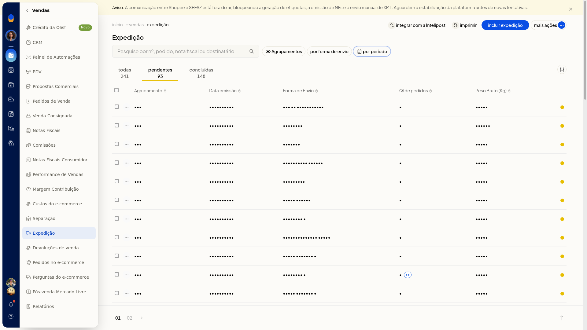
-
Filtre pela forma de envio e pelo período.
-
No controle Agrupamentos, escolha Visão por agrupamentos ou Visão por pedidos.
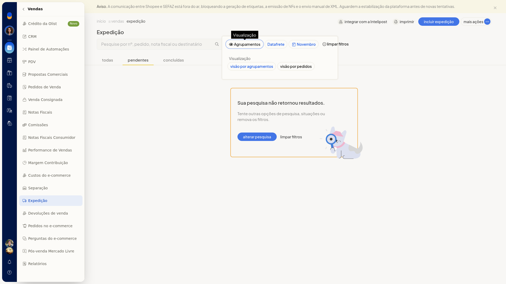
Incluir a expedição
-
Em Vendas > Expedição, clique em Incluir expedição.
-
Confira a forma de envio.
-
Deixe desmarcada ou marque Incluir pedidos e notas sem forma de envio.
-
Em Pedidos disponíveis, filtre pela situação da separação e pelo período. O período é um intervalo de datas.

-
Para escolher registros pontuais, mude para Pedidos específicos e pesquise pelo pedido ou pela chave de acesso.
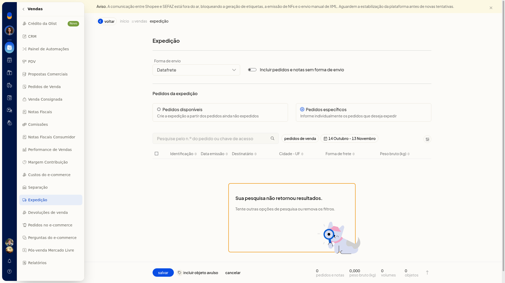
-
Clique em Salvar. Cancelar dispensa a inclusão.
Incluir um objeto avulso
-
Dentro de Incluir expedição, clique em Incluir objeto avulso.
-
Informe a descrição, a data e o destinatário. A data usa o formato dd/mm/aaaa. O destinatário é um nome de cadastro. Se o nome não existir, a tela informa que o cadastro não foi encontrado.
-
Escolha o tipo: Envelope, Pacote/Caixa ou Rolo/Cilindro.
-
Informe a embalagem, a largura, o comprimento e os pesos da embalagem, líquido e bruto. Largura e comprimento são em centímetros, com vírgula decimal. Os pesos são em quilogramas, com vírgula decimal.
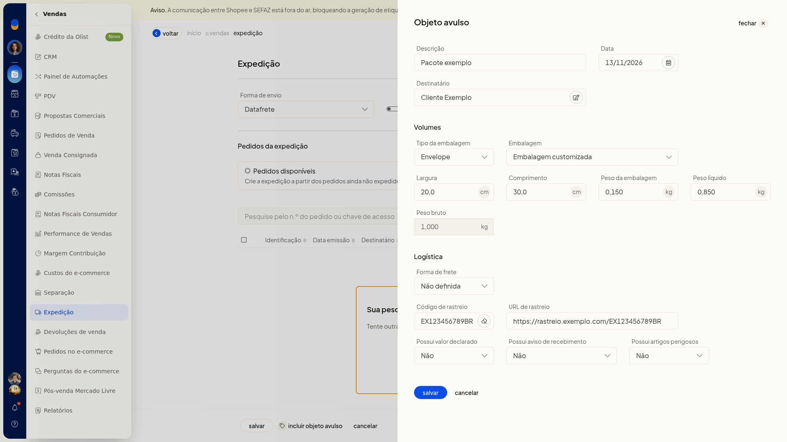
-
Defina a forma de frete, o código de rastreio, a URL de rastreio e as opções de valor declarado, AR e artigos perigosos, cada uma como sim ou não. A forma de envio acompanha a expedição. Cancelar fecha só esse painel e não grava o objeto.
Imprimir a consulta
-
Na lista de expedição, ajuste a aba e os filtros.
-
Clique em Imprimir. Sem registros, a pré-visualização mostra o cabeçalho da empresa e a mensagem A consulta não retornou registros, tente especificar outras opções de pesquisa.
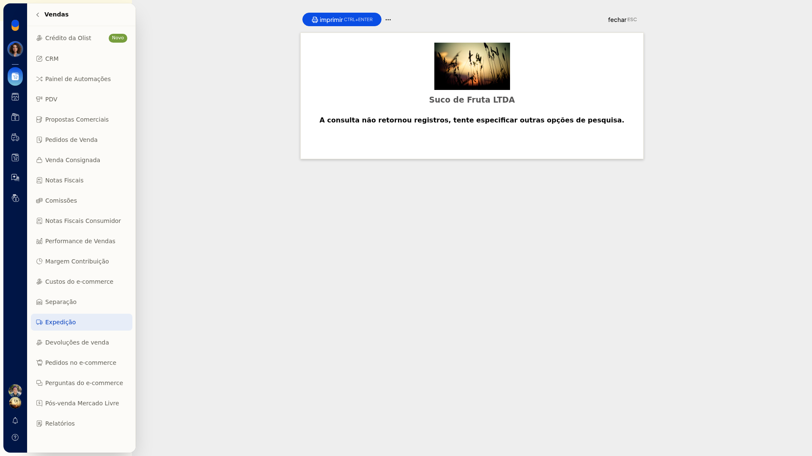
-
Feche com Fechar. O mesmo rótulo Imprimir relatório também aparece em Mais ações.
Exportar os agrupamentos para planilha
-
Em Vendas > Expedição, abra Mais ações.
-
Clique em Exportar para planilha. A opção fica nesse menu, junto de Imprimir relatório e Integrar com a Intelipost.

Integrar notas com a Intelipost
-
Em Vendas > Expedição, clique em Integrar com a Intelipost. A mesma ação também está em Mais ações.
-
Na tela Integrar notas fiscais com a Intelipost, filtre por contato ou identificação, forma de envio, transportador e forma de frete.
-
Confira o resultado da pesquisa. Sem notas no filtro, a tela mostra Sua pesquisa não retornou resultados.
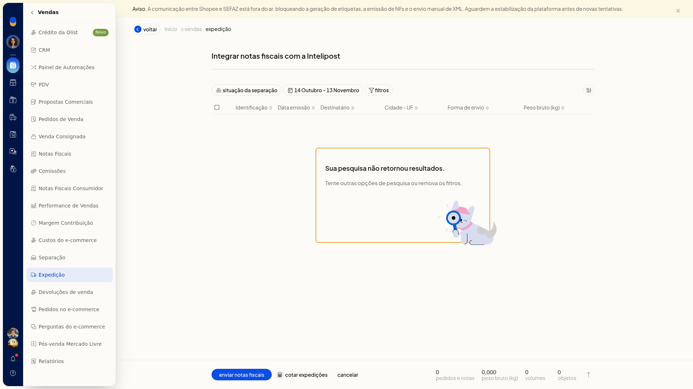
-
No rodapé, use enviar notas fiscais ou cotar expedições. cancelar fecha a tela sem enviar nem cotar.
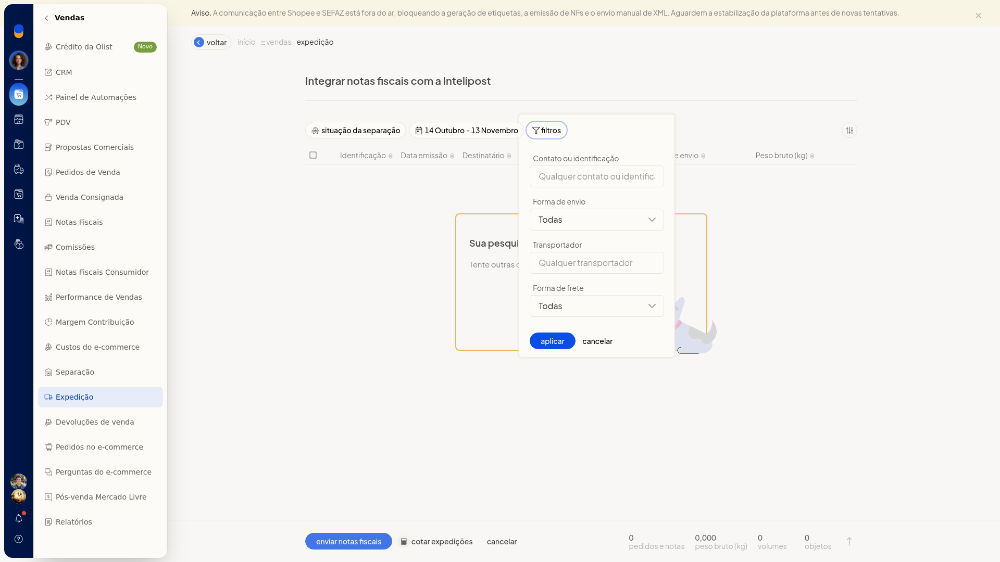
Imprimir etiquetas, coleta e declaração de conteúdo
-
Na visão por agrupamentos, abra o menu de contexto do agrupamento.
-
Em um agrupamento de gateway, escolha a ação desejada: Concluir expedição, Calcular preços e prazos, Imprimir etiquetas de volumes, Imprimir etiquetas de clientes, Imprimir DANFEs (com multiempresa), Marcar como concluída no ERP ou Excluir expedição.
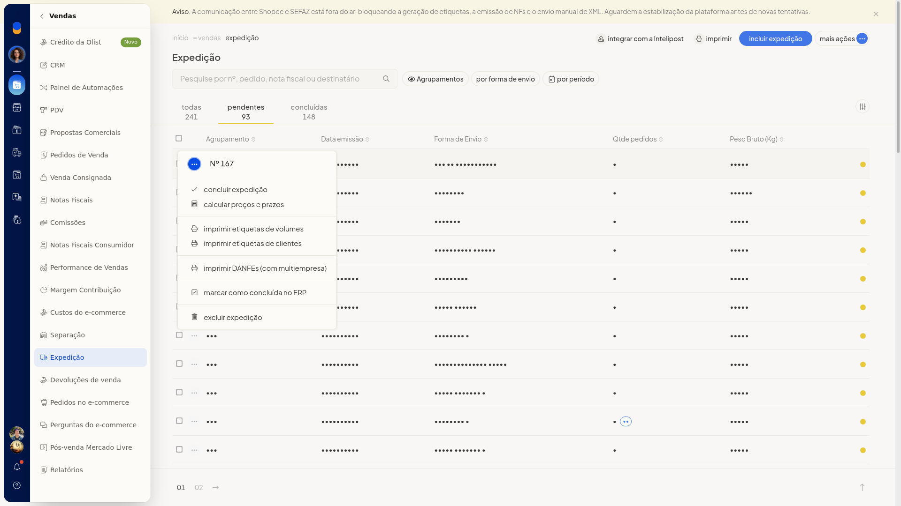
-
Em um agrupamento de transportadora com DC-e, além das ações em comum, escolha Imprimir coleta, Imprimir etiquetas de transportadora, Imprimir declaração de conteúdo ou Enviar XML das notas para transportadora.
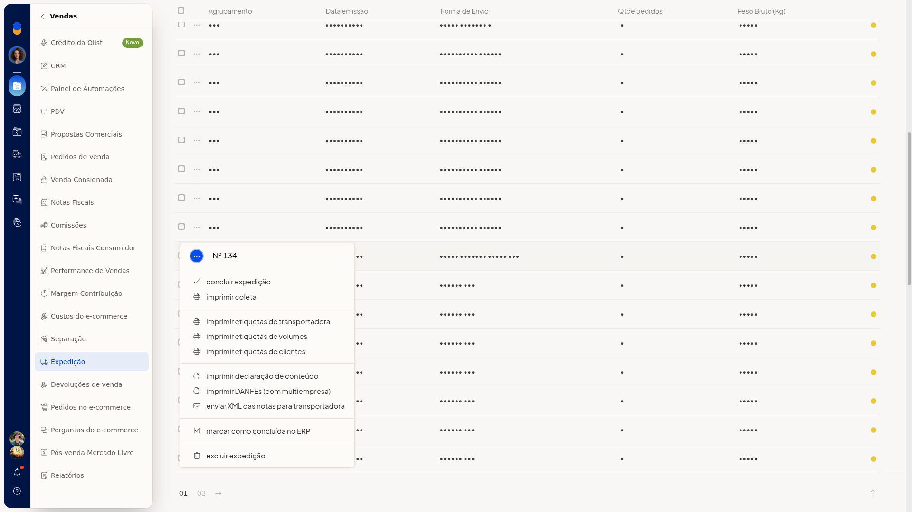
Configurar a expedição
-
Acesse Configurações > Configurações ERP > Vendas > Configurações da expedição.

-
Em Envio para a expedição, escolha Manual, ao salvar o pedido, ao aprovar o pedido, ao salvar a nota fiscal ou Automático ao autorizar a nota fiscal.
-
Em Imprimir automaticamente ao finalizar expedição, selecione os documentos, como DANFE e etiqueta de envio.
-
Em Valor declarado, use o valor informado na venda e, na falta dele, o total dos produtos, ou escolha Sem valor declarado.
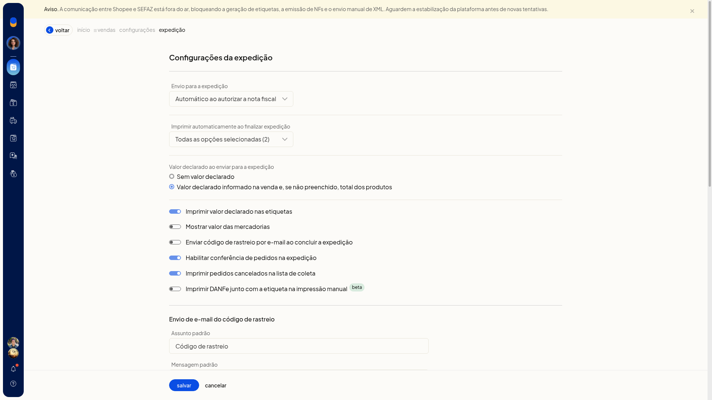
-
Ligue ou desligue Imprimir valor declarado nas etiquetas, Habilitar conferência de pedidos, Imprimir pedidos cancelados na lista de coleta, Mostrar valor das mercadorias, Enviar código de rastreio por e-mail ao concluir e Imprimir DANFe junto com a etiqueta na impressão manual beta.
-
Em Enviar automaticamente o XML para a transportadora ao concluir a expedição, ligue a opção se o XML deve ir para o email de NF-e do contato da transportadora.
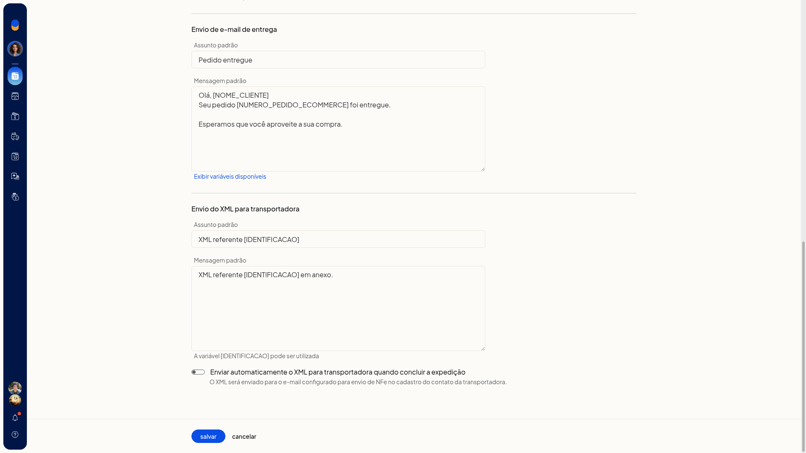
-
Revise os modelos de email de rastreio, de entrega e de XML. O modelo de entrega usa o assunto Pedido entregue, com [NOME_CLIENTE] e [NUMERO_PEDIDO_ECOMMERCE]. O modelo de XML usa o assunto XML referente [IDENTIFICACAO].
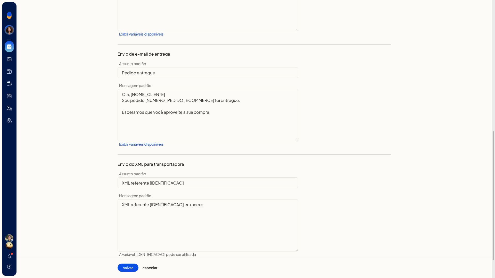
-
Clique em Salvar.
Resultado
A lista de expedição mostra as abas com contagem e os agrupamentos, para você localizar o que ainda será expedido ou o que já foi concluído.
Informações adicionais
- A visão por agrupamentos pode ser exportada para planilha a partir de Mais ações.
- No agrupamento você imprime etiquetas de volumes, etiquetas de clientes e DANFE, calcula preços e prazos, conclui a expedição ou marca a expedição como concluída no ERP.
- Em agrupamento de transportadora com DC-e, o menu também oferece impressão de coleta, etiquetas de transportadora, declaração de conteúdo e envio do XML das notas à transportadora.